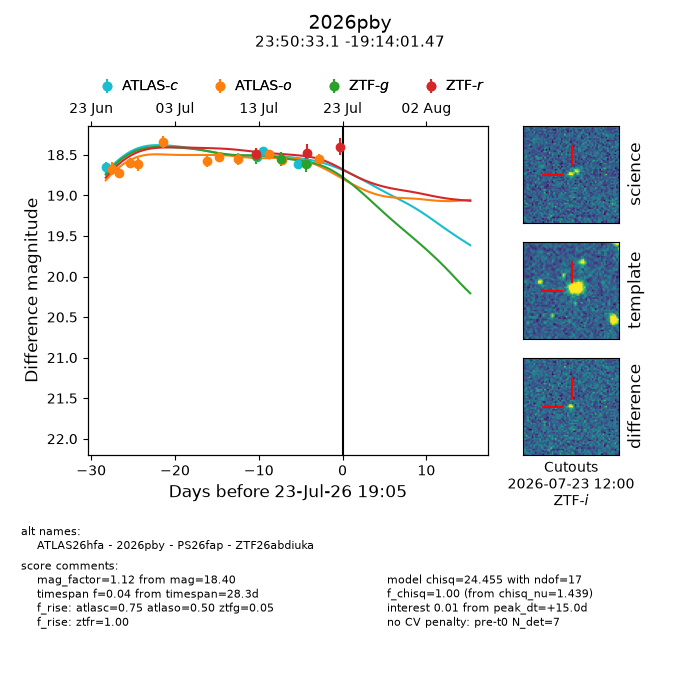
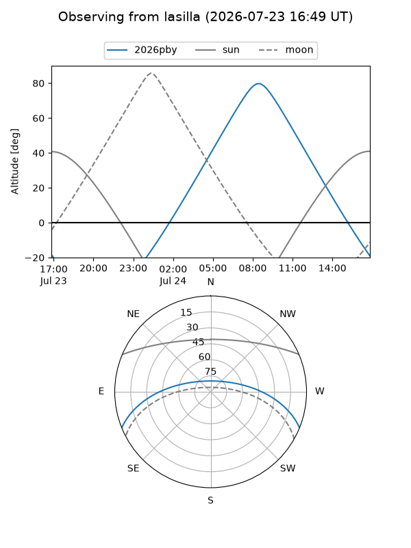
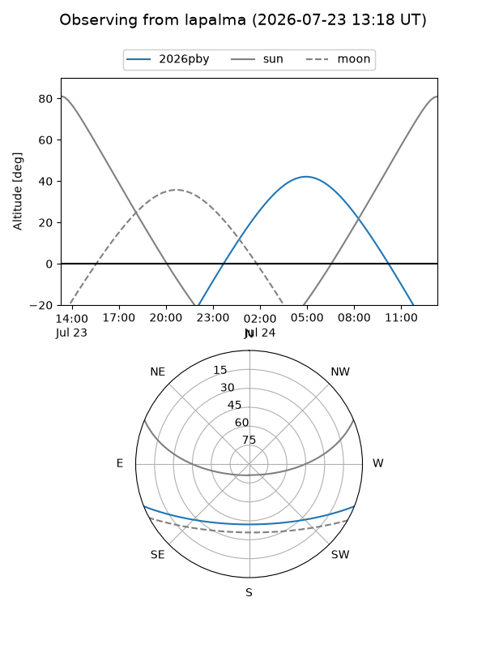
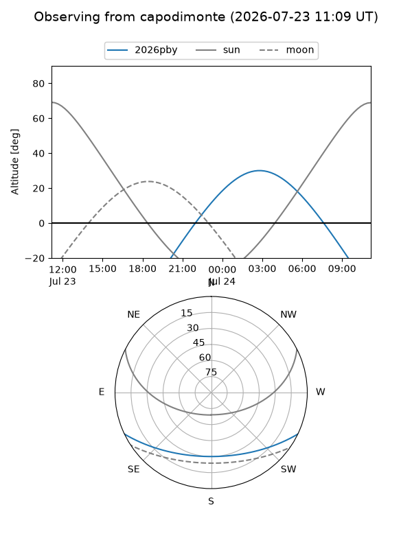
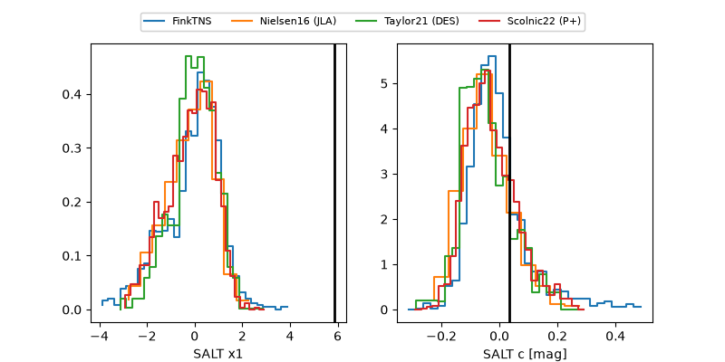

2026pby
Target 2026pby at 2026-07-23 19:08
Aliases and brokers:
FINK-ZTF: ztf.fink-portal.org/ZTF26abdiuka
Lasair-ZTF: lasair-ztf.lsst.ac.uk/objects/ZTF26abdiuka
ALeRCE-ZTF: alerce.online/object/ZTF26abdiuka
YSE-PZ: ziggy.ucolick.org/yse/transient_detail/2026pby
TNS name: wis-tns.org/object/2026pby
Direct TNS query: direct search
alt names
ZTF26abdiuka (ztf,fink_ztf)
2026pby (tns,yse)
ATLAS26hfa (atlas)
PS26fap (panstarrs)
Coordinates:
equatorial (ra, dec) = 357.6378,-19.23374
equatorial (HMS+DMS) = 23:50:33.07,-19:14:01.47
galactic (l, b) = (59.1810,-73.95443)
Flags:
TNS type: nan
peak dt: +15.0
Photometry:
last atlasc=18.60, atlaso=18.55, ztfg=18.61, ztfr=18.40
5 atlasc, 11 atlaso, 3 ztfg, 3 ztfr detections
Lightcurve

Visibility



Additional plots
